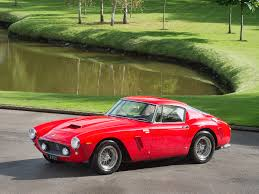

The Ferrari 250 GT SWB (Short Wheelbase) is a celebrated classic sports car that embodies Ferrari’s blend of beauty, performance, and racing heritage. Designed in 1959 by Pininfarina and engineered by Ferrari for both road and track use, the 250 GT SWB is renowned for its elegant yet aggressive styling, marked by flowing curves, a compact silhouette, and Ferrari’s iconic prancing horse emblem. It was powered by a 3.0-liter V12 engine, producing up to 280 horsepower, which gave it impressive speed and agility for the time. With its shorter wheelbase compared to earlier models, the SWB was more maneuverable, making it highly competitive on tight, winding circuits. The car could accelerate from 0 to 60 mph in around 6 seconds—a remarkable feat in the 1960s—and reach a top speed of approximately 150 mph.
The Ferrari 250 GT SWB achieved legendary status on the racetrack, dominating events such as the Tour de France and the 24 Hours of Le Mans. Its combination of power, lightness, and precise handling made it a favorite among drivers, and it helped solidify Ferrari’s reputation as a premier racing marque. Only a limited number of these models were produced, enhancing its desirability among collectors; today, the 250 GT SWB is one of the most sought-after Ferraris, with original models fetching tens of millions of dollars at auction. For enthusiasts and collectors, the Ferrari 250 GT SWB represents the pinnacle of 1960s automotive design, a car that is revered for both its beauty and its racing prowess, making it an enduring symbol of Ferrari’s golden era.
